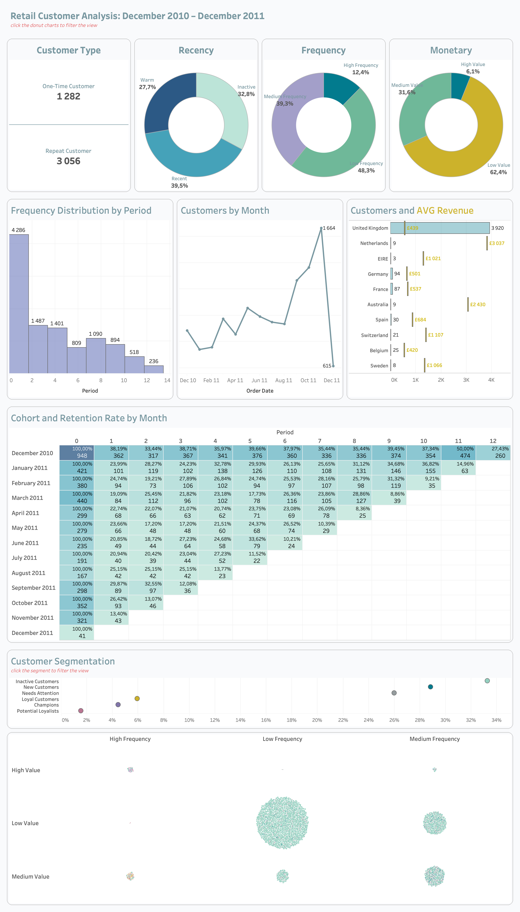

flowchart TB A[Customer KPI Section] B[Customer Growth Trend] C[Customer Segmentation] D[Revenue per Customer] E[Frequency Analysis] F[RFM Analysis] G[Cohort Retention] A --> B A --> C A --> D B --> E C --> F D --> G
Session 06: Customer Analysis Dashboard
Advanced Dashboards
tableau
Retail Sales Customer Analysis Dashboard | Tableau Build Guide
Dashboard Goal
The purpose of this dashboard is to analyze customer behavior, customer quality, purchasing patterns, and long-term customer value within the retail business.
Unlike a general sales dashboard, this dashboard focuses specifically on understanding customers rather than transactions alone.
The dashboard should help stakeholders answer important business questions such as:
- Who are the most valuable customers?
- Which customer segments generate the highest revenue?
- How frequently do customers purchase?
- Which customers are becoming inactive?
- Which customer groups should be targeted with marketing campaigns?
- How strong is customer retention over time?
- Which customer behaviors indicate loyalty?
This dashboard is especially important for:
- Marketing teams
- CRM teams
- Retention teams
- Product managers
- Business executives
The dashboard should feel:
- Analytical
- Executive-level
- Clean
- Structured
- Interactive
- Modern
- Presentation-ready
Recommended Dashboard Structure
The dashboard should be divided into several analytical layers.
The user should first understand high-level customer KPIs and then move deeper into segmentation, behavioral analysis, and retention insights.
This structure creates a natural analytical storytelling flow.

Recommended Dashboard Size
| Element | Recommendation |
|---|---|
| Dashboard Size | 1400 × 900 |
| Layout Type | Tiled |
| Device Layout | Desktop |
| Outer Padding | 20–30 px |
| Space Between Containers | 10–20 px |
A consistent dashboard size improves alignment, responsiveness, and presentation quality.
Tiled layouts are recommended because they maintain structural consistency and reduce misalignment issues.
Dashboard Visual Hierarchy
The dashboard should guide users from summary-level insights into deeper customer analysis.
The most important information should always appear first.
Recommended hierarchy:
- Customer KPI Section
- Customer Growth Trends
- Segmentation Analysis
- Revenue and Frequency Analysis
- Retention and Cohort Analysis
The KPI section should immediately capture user attention because it establishes overall customer health.
Step 1 | Customer KPI Section
Purpose of Customer KPI Section
The KPI section provides an instant overview of customer performance and customer quality.
This section helps users quickly evaluate whether the customer base is:
- Growing
- Declining
- Becoming more valuable
- Becoming more engaged
- Retaining successfully
The KPI cards should remain visually dominant because they establish the analytical context for the rest of the dashboard.
Recommended Customer KPIs
| KPI | Business Meaning |
|---|---|
| Total Customers | Number of unique customers |
| AVG Revenue per Customer | Customer monetary value |
| Purchase Frequency | Customer engagement level |
| Retention Rate | Customer loyalty |
| Customer Growth % | Acquisition trend |
Each KPI should answer a specific customer-related business question.
Recommended KPI Layout
flowchart LR A[Total Customers] B[AVG Revenue] C[Frequency] D[Retention Rate] A --> B B --> C C --> D
The KPI cards should be aligned horizontally because this improves readability and scanning speed.
KPI Design Rules
Each KPI card should contain:
- Large KPI value
- KPI subtitle
- Growth %
- Previous period comparison
- Directional indicator
The KPI value should always remain the most visually dominant element.
Supporting information such as growth percentage and comparisons should appear below the main KPI value.
KPI Color Rules
| Situation | Color |
|---|---|
| Positive Trend | Green |
| Negative Trend | Red |
| Neutral | Gray |
Colors should reinforce analytical meaning rather than act as decoration.
Green should communicate positive customer behavior, while red should indicate declining performance or potential churn risk.
Recommended KPI Card Dimensions
| Element | Recommendation |
|---|---|
| Width | 240–280 px |
| Height | 120–150 px |
| Inner Padding | 10–15 px |
| Space Between Cards | 15–20 px |
All KPI cards should maintain identical dimensions to preserve dashboard balance and visual consistency.
Recommended Typography Hierarchy
| Element | Font Size | Weight |
|---|---|---|
| Dashboard Title | 24–32 px | Bold |
| Section Titles | 16–20 px | Semi-bold |
| KPI Values | 28–40 px | Bold |
| KPI Labels | 11–14 px | Regular |
| Growth % | 12–16 px | Semi-bold |
| Axis Labels | 10–12 px | Regular |
Typography should improve readability and help users quickly identify the most important information.
Recommended Tableau Fonts
| Font | Usage |
|---|---|
| Tableau Book | Default dashboard text |
| Tableau Medium | KPI values and titles |
| Arial | Universal readability |
| Verdana | Small labels |
These fonts render consistently across Tableau dashboards and presentations.
Recommended Google Fonts
| Font | Style |
|---|---|
| Inter | Modern KPI typography |
| Roboto | Clean dashboard labels |
| Open Sans | Professional readability |
| Montserrat | Strong dashboard titles |
| Source Sans 3 | Analytical styling |
These fonts create a modern executive dashboard appearance.
Step 2 | Build Customer Growth Trend
Purpose of Customer Growth Analysis
This section helps users understand how the customer base evolves over time.
The goal is to identify:
- Growth acceleration
- Customer acquisition trends
- Seasonal behavior
- Declining customer activity
- Long-term customer trends
This analysis is important because customer growth is often a leading business performance indicator.
Recommended Chart Type
Use:
- Line Chart
Optional additions:
- Moving Average
- Trend Line
- Dual-axis comparison
Line charts are ideal because they clearly communicate change over time.
Customer Growth Design Rules
Do:
- Highlight latest point
- Use clean gridlines
- Maintain minimal labels
- Use one dominant color
- Keep trend visually smooth
Avoid:
- Too many trend lines
- Heavy formatting
- Excessive colors
- Overcrowded labels
The chart should emphasize readability and trend recognition.
Recommended Growth Trend Layout
flowchart TB A[Customer Count] B[Trend Analysis] C[Growth Direction] A --> B B --> C
The trend chart should appear directly below the KPI section because it extends the overall business story.
Step 3 | Build Customer Segmentation Analysis
Purpose of Segmentation Analysis
Customer segmentation divides customers into groups based on purchasing behavior and customer value.
This analysis helps businesses:
- Personalize marketing campaigns
- Identify high-value customers
- Detect inactive customers
- Improve customer targeting
- Increase retention
Segmentation transforms raw customer data into actionable business insights.
Recommended Customer Segments
| Segment | Meaning |
|---|---|
| Champions | Highly valuable customers |
| Loyal Customers | Frequent repeat purchasers |
| At Risk | Declining engagement |
| New Customers | Recently acquired |
| Inactive Customers | Low activity |
Each segment should have a clear business definition and analytical purpose.
Recommended Chart Types
Use:
- Donut Charts
- Bar Charts
- Treemaps
Each visualization should simplify understanding of customer distribution.
Segmentation Design Rules
Do:
- Use distinct colors
- Highlight important segments
- Limit total number of segments
- Maintain readable labels
Avoid:
- Too many segment categories
- Similar colors
- Dense visual layouts
Segmentation should remain simple enough for executives to interpret quickly.
Step 4 | Build Average Revenue per Customer Analysis
Purpose of Revenue per Customer Analysis
This section measures customer quality rather than only customer quantity.
A business may have many customers but low customer value.
This analysis helps answer:
- Which customers generate the most revenue?
- Which customer groups spend the most?
- Is customer value improving?
- Which segments should receive retention attention?
Customer value is often more important than customer count alone.
Recommended Chart Types
Use:
- Bar Charts
- Scatter Plots
- Boxplots
Scatter plots are especially useful for identifying high-value customer outliers.
Revenue Analysis Design Rules
Do:
- Highlight valuable customers
- Compare segments clearly
- Use minimal styling
- Maintain clean labels
Avoid:
- Excessive labels
- Overcrowded marks
- Too many simultaneous dimensions
The analysis should focus on identifying customer quality patterns.
Step 5 | Build Purchase Frequency Analysis
Purpose of Frequency Analysis
Frequency analysis measures how often customers purchase.
This section helps identify:
- Highly engaged customers
- Repeating customers
- One-time buyers
- Loyalty patterns
- Engagement decline
Purchase frequency is one of the strongest indicators of customer loyalty.
Recommended Chart Types
Use:
- Histograms
- Bar Charts
- Heatmaps
Histograms are useful for understanding purchase frequency distributions.
Frequency Analysis Design Rules
Do:
- Group frequencies logically
- Highlight repeat behavior
- Sort clearly
- Maintain simple formatting
Avoid:
- Too many bins
- Dense labels
- Visual clutter
The analysis should remain easy to scan and interpret.
Step 6 | Build RFM Analysis
Purpose of RFM Analysis
RFM analysis is one of the most important customer analytics techniques in retail analysis.
RFM evaluates customers based on:
- Recency
- Frequency
- Monetary Value
This helps identify the strongest and weakest customer groups.
RFM Definitions
| Metric | Meaning |
|---|---|
| Recency | How recently customer purchased |
| Frequency | How often customer purchases |
| Monetary | How much customer spends |
Customers with strong Recency, Frequency, and Monetary scores are typically the most valuable.
Recommended RFM Visuals
Use:
- Heatmaps
- Scatter Plots
- Segment Tables
Heatmaps work especially well because they reveal concentration and intensity patterns quickly.
RFM Design Rules
Do:
- Highlight high-value customers
- Use sequential color palettes
- Keep labels readable
- Simplify visual structure
Avoid:
- Excessive categories
- Complex color palettes
- Overcrowded visuals
The goal is to simplify customer prioritization.
Step 7 | Build Customer Retention Analysis
Purpose of Retention Analysis
Retention analysis helps understand long-term customer loyalty.
Retention analysis is critical because retaining customers is often cheaper than acquiring new customers.
This section should answer:
- How many customers return?
- Which cohorts retain best?
- When do customers churn?
- Which acquisition periods perform best?
Recommended Retention Visual
Use:
- Cohort Heatmap
The cohort heatmap should display retention percentages over time.
This allows users to quickly identify strong and weak retention patterns.
Retention Design Rules
Do:
- Use sequential color gradients
- Highlight strong cohorts
- Maintain readable labels
- Keep the structure clean
Avoid:
- Too many colors
- Excessive labels
- Strong saturated palettes
The heatmap should prioritize readability over decoration.
Recommended Cohort Layout
flowchart TB A[Cohort Month] B[Retention Rate] C[Customer Loyalty] A --> B B --> C
The layout should guide users naturally from acquisition cohorts into retention behavior.
Step 8 | Build Customer Behavioral Analysis
Purpose of Behavioral Analysis
Behavioral analysis identifies customer purchasing habits and shopping behavior.
Possible analyses include:
- Purchases by Hour
- Purchases by Weekday
- Peak shopping periods
- Seasonal behavior
Behavioral insights help businesses optimize campaigns, promotions, and operational planning.
Recommended Chart Types
Use:
- Heatmaps
- Line Charts
- Bar Charts
Heatmaps are especially useful for visualizing time-based purchasing intensity.
Behavioral Analysis Design Rules
Do:
- Highlight peak periods
- Use intuitive time ordering
- Keep color gradients simple
- Maintain clean spacing
Avoid:
- Overcrowded labels
- Too many simultaneous dimensions
- Complex formatting
The analysis should remain easy to interpret quickly.
Step 9 | Dashboard Actions
Purpose of Dashboard Actions
Dashboard actions transform the dashboard from a static report into an interactive customer analytics application.
The dashboard actions help users:
- Explore customer behavior dynamically
- Filter related visualizations
- Navigate customer relationships
- Investigate customer segments
- Analyze retention patterns interactively
Well-designed actions improve analytical storytelling and user engagement.
Filter Actions Used
The dashboard uses Filter Actions to connect customer analysis visualizations together.
Example interactions:
- Clicking a customer segment filters KPI cards
- Selecting a cohort updates retention analysis
- Choosing a country filters customer charts
- Selecting an RFM segment updates frequency analysis
- Clicking a category filters revenue analysis
This creates a connected analytical workflow.
Recommended Filter Action Flow
flowchart LR A[User Selects Customer Segment] B[Dashboard Filters Applied] C[Related Charts Update] A --> B B --> C
This interaction structure improves dashboard usability and exploration.
Highlight Actions Used
Highlight actions emphasize selected customer groups while preserving surrounding analytical context.
Example use cases:
- Highlighting customer segments
- Emphasizing valuable customers
- Highlighting cohorts
- Focusing on retention groups
Highlight actions improve focus without hiding the rest of the data.
Parameter Actions Used
Parameter-based interactions improve dashboard flexibility.
Possible parameter interactions include:
- Switching customer metrics
- Changing time periods
- Selecting Top N customers
- Switching between Revenue and Frequency analysis
- Dynamically changing segmentation views
Parameters create a more customizable analytical experience.
Dashboard Action Design Principles
Dashboard actions should:
- Improve analytical exploration
- Support storytelling
- Reduce clutter
- Guide user attention
- Maintain intuitive interactions
The interactions should feel natural and easy to understand.
Dashboard Action Best Practices
Do:
- Keep interactions intuitive
- Maintain logical flow
- Clearly connect related charts
- Keep dashboard response fast
Avoid:
- Too many simultaneous actions
- Complex interaction chains
- Over-filtering dashboards
- Excessive navigation complexity
Dashboard actions should simplify analysis rather than create confusion.
Recommended Filters
Use:
- Date
- Customer Segment
- Country
- Product Category
Filters should remain compact and easy to use.
Recommended Tableau Features
Students should practice:
- Parameters
- Dynamic Titles
- Dashboard Actions
- Filter Actions
- Highlight Actions
- Tooltips
- Containers
- Calculated Fields
- Conditional Formatting
This dashboard should demonstrate both analytical thinking and Tableau technical skills.
Important Tableau Functions
| Function | Purpose |
|---|---|
| COUNTD() | Unique customer count |
| SUM() | Aggregation |
| IF | Conditional logic |
| RANK() | Ranking |
| WINDOW_SUM() | Table calculations |
| FIXED LOD | Stable aggregation |
These functions are commonly used in professional customer analytics dashboards.
Average Revenue per Customer Calculation
SUM([Revenue])
/
COUNTD([Customer ID])Purchase Frequency Calculation
COUNT([Order ID])
/
COUNTD([Customer ID])Step 10 | Container Structure
flowchart TB A[Main Vertical Container] A --> B[Customer KPI Section] A --> C[Growth and Segmentation] A --> D[Retention Analysis] C --> E[Customer Growth] C --> F[RFM Analysis] C --> G[Frequency Analysis]
Note
Containers help maintain alignment and dashboard responsiveness.
Resources
GitHub
Tableau Course Code Repository for this session is available in the GitHub repository linked above. It includes:
- Tableau workbook with all examples
- Sample datasets